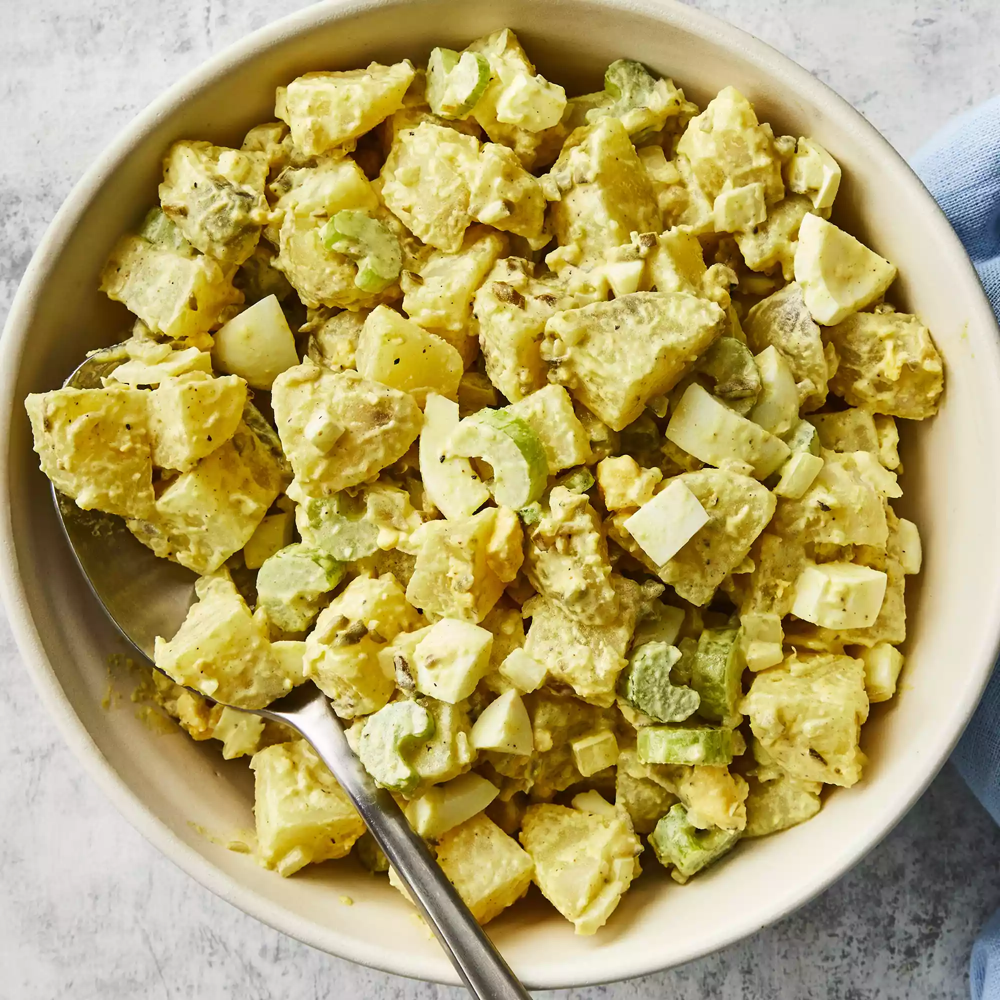

Potato Salad

Description
From Wikipedia:
Potato salad is a salad dish made from boiled potatoes, usually containing a dressing and a variety of other ingredients such as boiled eggs and raw vegetables.
Ingredients
- 5 potatoes
- 3 eggs
- 1 cup chopped celery
- ½ cup chopped onion
- ½ cup sweet pickle relish
- ¼ cup mayonnaise
- 1 tablespoon prepared mustard
- ¼ teaspoon garlic salt
- ¼ teaspoon celery salt
- ground black pepper to taste